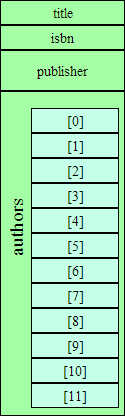

| 1 of 17


 |   |
| | 1 of 17
| |
CoWeM pre-processes Markdown documents using a macro processor described in more detail later. Using that, I have added a number of extensions to the basic Markdown. Theme may not always adhering to the Markdown goal of keeping the source text looking suggestive of the formatted results, but they do add facilitiesthat I find particularly useful.
These extensions can be applied to text inside a paragraph:
* Lists can be marked as
incremental >>>
* so that, when documents are presented
in the _pages_ or 1_ format,
* the list elements will be revealed
one at a time.
* Lists can be marked as
incremental >>>
* so that, when documents are presented
in the _pages_ or 1_ format,
* the list elements will be revealed
one at a time.
Lists can be marked as incremental
* Lists can be marked as
incremental >>>
* so that, when documents are presented
in the _pages_ or 1_ format,
* the list elements will be revealed
one at a time.
Lists can be marked as incremental
so that, when documents are presented in the 1_ format,
* Lists can be marked as
incremental >>>
* so that, when documents are presented
in the _pages_ or 1_ format,
* the list elements will be revealed
one at a time.
Lists can be marked as incremental
so that, when documents are presented in the 1_ format,
You can view this document as slides to see this in action.
I have a markup for \firstterm{new terms} being
introduced for the first time in a document, and for
\emph{very strong emphasis}.
I have a markup for new terms being introduced for the first time in a document, and for very strong emphasis.
I also have a set of markups for highlighting text
in \hli{one}, \hlii{two}, \hliii{three},
and \hliv{four colors}.
I have commands to generate callout numbers \co1 ,
\co2 , ..., \co9 . Both the callout
numbers and color highlighting are generally used
in conjunction with
the code markups discussed [later](#post-processing).
I also have a set of markups for highlighting text in one, two, three, and four colors. I have commands to generate callout numbers ➀ , ➁ , …, ➈ . Both the callout numbers and color highlighting are generally used in conjunction with the code markups discussed later.
Block mark-ups flag a block of paragraphs for special formatting. Most of these are begin by a \b… command and terminated by a matching \ecommand.
\bExample{An Example of Examples}
For example, you can introduce numbered
examples.
\eExample
Example 1: An Example of ExamplesFor example, you can introduce numbered examples.
As a general rule, these \b… and \e… commands should be entered on a separate line, as if they constitute a separate paragraph. (This was required in older versions of this software. It’s more relaxed in the current version, but it is probably still a good idea if only because it improves the visibility of the commands and helps you make sure that, for every \b… you have a corresponding \e…
\bSidebar
I do like an occasional sidebar.
\eSidebar
I do like an occasional sidebar.
\bSidebar{33}
Sidebars can be width-constrained
so that they will not extend
horizontally past a certain
percentage of the page width.
Any multiple of 5 can be given as
a maximum with. 33 and 67 are also
suppported.
If no value is
given, the default is 50.
If the sidebar contents have a
"natural" width less than the value
given, it will stay that wide.
The value is only used to set a maximum
width.
\eSidebar`
Sidebars can be width-constrained so that they will not extend horizontally past a certain percentage of the page width. Any multiple of 5 can be given as a maximum with. 33 and 67 are also supported.
If no value is given, the default is 50.
If the sidebar contents have a “natural” width less than the value given, it will stay that wide. the value is only used to set a maximum width.
\bSlideshow
\bSlide
You can insert an internal "slideshow".
Clicking on the controls below...
\eSlide
\bSlide
...will move you from "slide" to "slide"...
\eSlide
\bSlide
...to "slide".
\eSlide
\eSlideshow
Every now and then, I like to present two columns of material, side-by-side.
// Do something
void foo();
\bSplitColumns
Every now and then, I like to present two columns of material, side-by-side.
\splitColumn
// Do something
void foo();
\eSplitColumns
Like this, for example. The right column will wind up getting bumped down below the left.
// Do something
void foo();
This is not a particularly robust formatting, however, and things get ugly if the content is a bit too wide for the screen.
^^^[click to reveal]
The three carets introduce an HTML5-style details
element, which allows click-to-reveal behavior.
As it happens, neither of the Microsoft browsers (IE or Edge)
support this element yet, so this is currently
simulated via Javascript.
^^^
The three carets introduce an HTML5-style details element, which allows click-to-reveal behavior.
The three carets introduce an HTML5-style details element, which allows click-to-reveal behavior.
As it happens, neither of the Microsoft browsers (IE or Edge) support this element yet, so this is currently simulated via Javascript.
A variation on this is the ability to load long code listings,
contained in a separate file providing both a link to the code as a
separate HTML page and a click-to-reveal button to expand the listing
in place.
\loadlisting{unittest.h}
Files processed in this way can end with `.h`, `.cpp`, `.java`, or
`.listing` file names.
A variation on this is the ability to load long code listings, contained in a separate file providing both a link to the code as a separate HTML page and a click-to-reveal button to expand the listing in place.
#ifndef UNITTEST_H
#define UNITTEST_H
#include <string>
/*
* This class helps support self-checking unit tests.
*
* A small collection of test assertions (inspired by the JUNIT
* package for Java is supported). The number of successes and failures
* of these assertions are tallied and can be accessed at any time (typically
* at the end of the test suite).
*
* In addition, detailed error messages are printed for the first
* DETAIL_LIMIT failures. (After that additional failures are tallied
* but not printed.)
*
*/
class UnitTest {
private:
static long numSuccesses;
static long numFailures;
static long DETAIL_LIMIT;
static long NOTICE_INTERVAL;
public:
// The main test function - normally called via one of the macros
// declared following this class.
static void checkTest (bool condition, const char* conditionStr,
const char* fileName, int lineNumber);
static void checkTest (bool condition, const std::string& conditionStr,
const char* fileName, int lineNumber);
// Summary info about tests conducted so far
static long getNumTests() {return numSuccesses + numFailures;}
static long getNumFailures() {return numFailures;}
static long getNumSuccesses() {return numSuccesses;}
// Change the number of detailed messages to be printed.
static void setDetailLimit (long limit) {DETAIL_LIMIT = limit;}
// Start a fresh tally.
static void reset() {numSuccesses = numFailures = 0L; NOTICE_INTERVAL = 10L;}
// Print a simple summary report
static void report (std::ostream& out);
};
/**
* Macros - actual tests will invoke one of these
*/
#define assertTrue(cond) UnitTest::checkTest (cond, #cond, __FILE__, __LINE__)
#define assertFalse(cond) UnitTest::checkTest (!(cond), "!( ## cond ## )", __FILE__, __LINE__)
#define assertEqual( x, y ) UnitTest::checkTest ((x)==(y),\
"assertEqual(" #x "," #y ")", \
__FILE__, __LINE__)
#define assertNotEqual( x , y ) assertFalse ((x)==(y))
#define assertNull(x) checkTest ((x)==0)
#define assertNotNull(x) checkTest ((x)!=0)
#define succeed UnitTest::checkTest (true, "succeed", __FILE__, __LINE__)
#define fail UnitTest::checkTest (false, "fail", __FILE__, __LINE__)
#endif
A link is included to the unmodified source code file (to facilitate downloading), so that file should be one of the support files for the document set.
As noted earlier,
Markdown already has support for
inserting graphics into a page. You
can place graphics inline
like this: .
You can also type HTML `img` tags directly,
<img src="bookarray.png" align='right'/> which makes
it possible to use the "`align`" attribute
to position your graphics.
<img src="bookLL.png" align='right'/>
A problem with this can occur when long
vertical graphics are
accompanied by relatively short text
(particularly when viewed on a
wide screen).
<img src="bookarray.png" align='right'/>The
floating graphics
can stack up on one another,
leading to a confusing layout.
As noted earlier, Markdown already has support for inserting graphics into a page. You can place graphics inline like this:  .
.
You can also type HTML img tags directly,  which makes it possible to use the “align” attribute to position your graphics.
A problem with this can occur when long vertical graphics are accompanied by relatively short text (particularly when viewed on a wide screen).
The floating graphics can stack up on one another, leading to a confusing layout.
<img src="bookarray.png" align='right'/> As
a fix for this, I provide a CSS style
class `noFloat` with the attribute clear:both. This
can be inserted as an empty paragraph:
<div class="noFloat"> </div>
<img src="bookLL.png" align='right'/> This
has the effect of forcing any following
text and graphics to be positioned after the end of
floating graphics, sidebars, or other floating content.
As a fix for this, I provide a CSS style class noFloat with the attribute clear:both. This can be inserted as an empty paragraph:
This has the effect of forcing any following text and graphics to be positioned after the end of floating graphics, sidebars, or other floating content.
However, I find that I often wind up using the same graphics sequences over and over, so I have some shortcut commands. The command \picOnRight(_filename_,_pct_) is equivalent to
<div class="noFloat"></div>
<img src="filename.png" align="right"
style="max-width: pct%/>"
It drops below any existing floating content, then inserts a floating graphic on the right, reducing the graphic’s size only if it exceeds a width of pct%.
\picOnLeft(bookarray,25)
Similarly, I can insert graphics on the left
instead of on the right.
Similarly, I can insert graphics on the left instead of on the right.
\centerPic(bookLL,50)
Or I can put them centered with nothing flowing around them.
Or I can put them centered with nothing flowing around them.
```plantuml
class Book {
title: String
authors: list<Author>
getLocation(): Shelf
}
Publication <|- Book
Shelf o- Book
```
If a code block (introduced with three back-ticks) is labeled with the language name “plantuml”, then the code block will be replaced by a graphic representing a UML diagram as interpreted by PlantUML. (This mechanism is similar to the support for PlantUML in the GitHub dialect of Markdown.)
class Book {
title: String
authors: list<Author>
getLocation(): Shelf
}
Publication <|- Book
Shelf o- Book
```plantuml class=right
skinparam style strictuml
hide empty members
Publication <|-down- Book
Shelf o- "*" Book
```
It is possible to add CSS styles to the generated image using the class= modifier. The most obvious application of this is to cause the image to float on the right or left.
skinparam style strictuml
hide empty members
Publication <|-down- Book
Shelf o- "*" Book
Change the “right” to “left” to float on the other side.
Change to “center” for a centered, non-floating figure.
```plantuml classes='left foobar'
skinparam style strictuml
skinparam shadowing true
hide empty members
caption Figure 1
title
Class Relationships
endtitle
Author --> Book : writes
```
It is actually possible to add multiple CSS class names (inside single-quotes).
skinparam style strictuml
skinparam shadowing true
hide empty members
caption Figure 1
title
Class Relationships
endtitle
class Author {
}
class Book {
}
Author --> Book : writes
(Although you would have to examine the generated HTML to see that the useless class “foobar” is attached to the image.)
Support is also available for Mermaid, another Markdown-friendly graphics processor.
```mermaid
graph TD
need[Need a graphic]
inUML{Is it UML?}
need --> inUML
thenPart[I prefer PlantUML]
inUML --yes--> thenPart
elsePart[Use Mermaid]
inUML --no--> elsePart
joined([done])
thenPart --> joined
elsePart --> joined
```
If a code block (introduced with three back-ticks) is labeled with the language name “mermaid”, then the code block will be replaced by a graphic representing a diagram as interpreted by Mermaid.
graph TD
need[Need a graphic]
inUML{Is it UML?}
need --> inUML
thenPart[I prefer PlantUML]
inUML --yes--> thenPart
elsePart[Use Mermaid]
inUML --no--> elsePart
joined([done])
thenPart --> joined
elsePart --> joined
```mermaid class=right
stateDiagram
[*] --> Test
Test --> [*]: working
Test --> Debug: broken
Debug --> Fix
Fix --> Test
```
As with the PlantUML diagrams, class info can be attached to alter the formatting.
stateDiagram
[*] --> Test
Test --> [*]: working
Test --> Debug: broken
Debug --> Fix
Fix --> Test
To facilitate discussing programming code, I have some special markups that can be inserted into C++ or Java code as comments. This way it does not affect the syntactic integrity of the code. You can load it into a programming editor or run it through a compiler with no ill effects. But when the HTML is generated, these comments are converted to appropriate markup.
If a /* */ style comment contains only a single digit number, e.g., /*1*/, it is converted to the corresponding callout symbol, which can then be discussed in the text:
Anatomy of a for loop
for (int i = 0➀; i < n➁; ++i➂) cout << a[i] << endl; ➃➀ represents the initialization of the loop.
➁ is the loop condition.
➂ is the repeat action.
➃ is the loop body.
Similarly, if a /* */ style comment contains only +1, +2, +3, or +4, this turns on a background color for highlighting. This highlighting is turned off with -1 , -2, -3, and -4, respectively. Also, + and - by themselves are shorthand for +1 and -1.
Anatomy of a for loop
for (int i = 0; i < n; ++i) cout << a[i] << endl;Here we see the initialization, condition, repeat action, and body components of the loop.
| | 1 of 17
| |